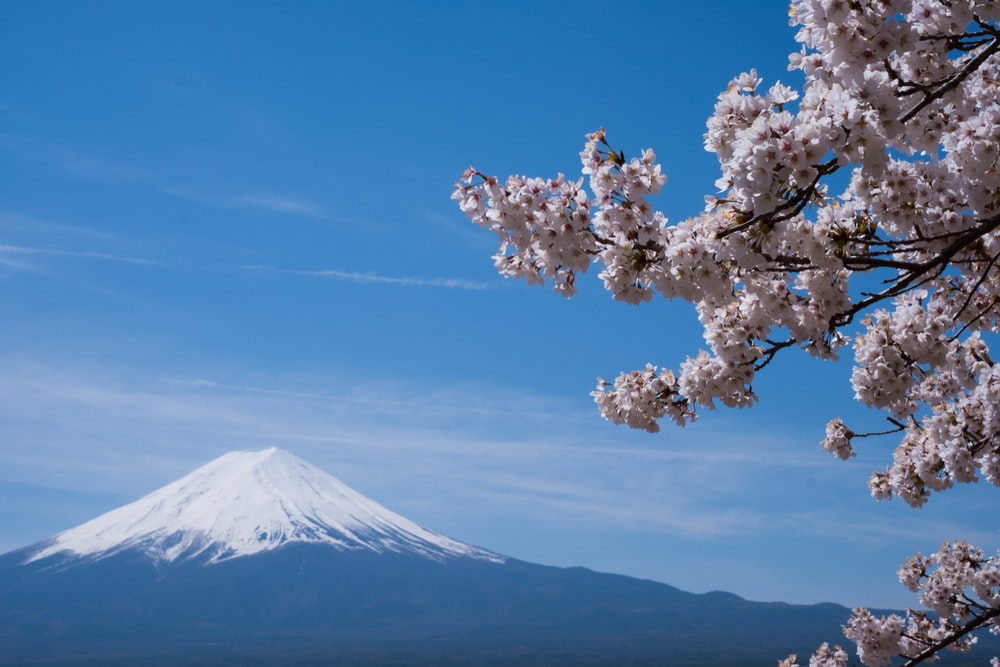
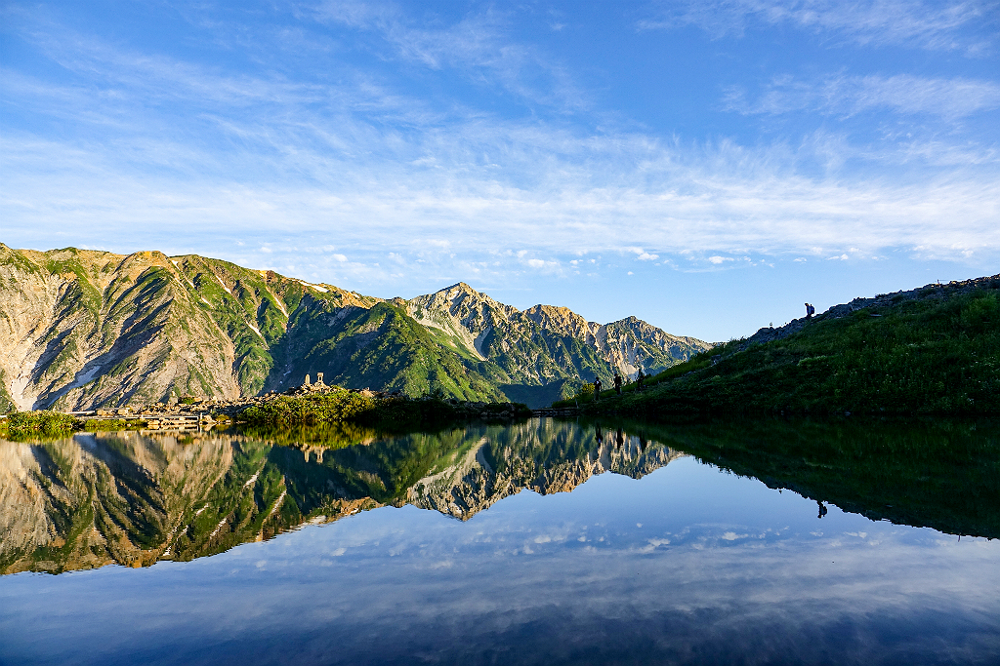

Locations of Japan
Japan is a very popular tourist location that offers a large variety of places to visit and things to do. This vast amount of activities available to you can be overwhelming. The goal of this list is to ease the headache of finsing things to do in Japan. This list will break down places and activities to visit into different cities as well as listing some adventurous activities in the country.
Tokyo
Ginza
The name comes from the words gin meaning silver
and za meaning guild
; in 1612 the Japanese government transferred its silver mint to this area. It is the most glamorous shopping district in Tokyo and one of the best-known in the world. Ginza is packed with upmarket boutiques, as well as ritzy cocktail and sushi bars. Fine jewelry is sold in the 1930s Wako Honkan department store, while ultramodern Ginza Place deals in high-tech electronics.
Authentic sumo wrestling
Who wouldn't want ot see an actual sumo match? Go to Ry?goku Kokugikan and get a ticket to see the action. This indoor arena offers weekly sumo wrestling events jam packed with the exhillerating atmosphere, great food, and "bigger than life" sumo stars.
Need directions?Tokyo's Disney Sea
This one of a kind theme park located on the outskirts of Tokyo, is one of the magical places in Japan. This Disney theme park differs from others with its nautical theme, including the 7 ports the park is divided into, the centerpiece of Mount Prometheus, and Ariel residing in the Mermaid Lagoon
Need directions?Kyoto
Kinkakuji Temple
Kinkakuji is a Zen temple in northern Kyoto whose top two floors are completely covered in gold leaf. This temple is a beautiful historic sight that attracts thousands of visitors every year. This is your chance to see this amazing site that has been standing since 1397.
Need directions?Kifune Shrine

If you want to escape the hustle and bustle to experience a bit of tranquility and calm, take the Eizan train north. The area is filled to the brim with wildlife and seasonal flowers blooming along the river, and the local restaurants and ryokan (traditional inns) serve meals on platforms built over the cool waters. You'll also find the Kifune Shrine where many fabulous photos and weddings are held.
Need directions?Bamboo Grove
This is another iconis area of Kyoto where you can take in the amazing view of the bamboo shoots. This is a beautiful place to escape the stress of life and get in tune with nature.
Need directions?Osaka
Osaka-jo
If you want a taste of the historical Japanese castles, this is the place to go. The castle that originally stood here was made in 1538 but was destroyed. The structure there today is a replica that was built in 1931. Despite the castle being a reconstruction, it is still an incredible building. The building also houses many historical items to observe.
Need directions?Osaka Museum of Housing and Living

This musem, said to be the best in Osaka, is an open air museum that allows visitors to view models of Japanese houses and traditional buildings. This museum houses replicas displaying what Osaka once was and the periods this city has been through.
Need directions?Umeda Sky Building
This building that can be seen from all over Osaka is the main landmark of the city. This 173 meter tall building is home to one of the most famous hanging gardens in Japan.
Need directions?Japan's Country Side
Mount Fuji
If you want to create a memory to last a lifetime, then climb the tallest mountain in Japan. Mount Fuji is home to astonishing views and many like minded hikers to share the journey. Overall, this is a great place to experience the beauty of Japans natural side.
Need directions?Happo Pond
This pond is found in the village of Nagano, a village know for winter skiing and its beautiful scenary. This is a great place to enjoy Japan with a nice hike through the amazing views.
Need directions?Koya Pond
This pond is truly an astonishing site in the fall. Thousands of people come to this pond located in Niigata every year to see the leaves on the trees turn to magical colors. Bring your hiking boots and spend the day taking in the scenary of the Japanese nature
Need directions?